PRIMEIROS ACONTECIMENTOS
VISÃO
“Eu, João,
vosso irmão e companheiro na tribulação, na realeza e na perseverança em JESUS,
exilado na 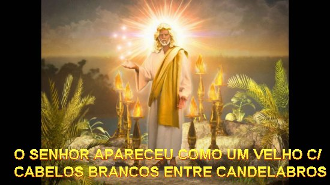
“Ao vê-LO, cai como morto a Seus pés. ELE, porém, colocou a Mão direita sobre mim, e disse:”“Não temas! EU Sou o PRIMEIRO e o ÚLTIMO, o VIVENTE (que possui a vida como coisa própria); estive morto, mas eis que estou vivo pelos séculos dos séculos, e tenho as chaves da Morte e do Hades (local onde ficavam os mortos, CRISTO tem poder de fazer sair do Hades os mortos). Escreve, pois, o que viste: tanto as coisas presentes como as que deverão acontecer depois destas. Quanto ao Mistério das Sete Estrelas que viste em Minha Mão Direita e os Sete Candelabros de Ouro (explico-lhe): as sete Estrelas são os “Anjos das Sete Igrejas” (Cada Igreja era governada por um Anjo Responsável. E a cada Anjo seria enviada uma carta. Contudo as Igrejas estão nas Mãos de CRISTO, sob o Seu Poder e Proteção), e os Sete Candelabros representam as Sete Igrejas”.
JESUS, o Messias apareceu com suas funções de Juiz Escatológico. Seus atributos são apresentados por meio de símbolos: “Sacerdote” (representado pela túnica longa);“Realeza” (pelo cinto de ouro); “Eternidade” (pelos cabelos brancos); “Ciência Divina” (olhos chamejantes para sondar os rins e os corações); “Estabilidade” (pés de bronze); “Sua Majestade é Terrificante” (brilho das pernas, do rosto, potencia da voz). ELE retém as Sete Igrejas (as Sete Estrelas) em seu Poder (Mão direita), e Sua Boca está pronta para lançar Seus Decretos Mortais (Espada afiada) contra os cristãos infiéis.
CARTAS ÀS IGREJAS DA ÁSIA
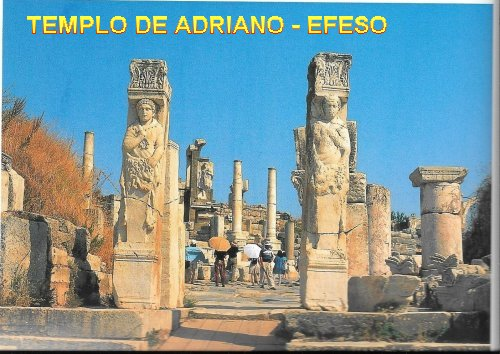
“A vós graça e paz da parte d’ “Aquele-que-é, Aquele-que-era e Aquele-que-vem”, da parte dos “Sete Espíritos” (Sete Anjos) que estão diante do SEU trono, e da parte de JESUS CRISTO, a Testemunha fiel, o Primogênito dos mortos, o Príncipe dos Reis da Terra. ÀQUELE que nos ama, e que nos lavou (libertou) de nossos pecados com Seu Sangue, e fez de nós um reino de sacerdotes, unidos a CRISTO Sacerdote, para DEUS, Seu PAI. A ELE pertence à glória e o domínio pelos séculos dos séculos. Amém.
“Eis que ELE vem com as nuvens, e todos os olhos O verão, até mesmo os que O transpassaram, e todas as tribos da Terra baterão no peito por causa DELE.
Sim! Amém!”
“EU Sou o Alfa e o Ômega (primeira e última letra do alfabeto grego), diz o SENHOR DEUS, Aquele-que-é, Aquele-que-era e Aquele-que-vem, o Todo-Poderoso”. (Final do 1º Capítulo)
AS CARTAS
As Cartas que o SENHOR mandou João enviar a cada uma das Sete Igrejas: Éfeso; Esmirna; Pérgamo; Tiatira; Sardes; Filadélfia e Laodicéia, são conselhos e repreensões, no sentido de orientá-las a permanecer no caminho do direito, da justiça e do amor fraterno, suportando as tribulações, assim como, mantendo um corajoso, fiel e fervoroso amor a DEUS, sem renegar a fé, lembrando que ELE esta sempre presente, derramando o Seu Amor e a Sua infinita misericórdia, concedendo ao vencedor a coroa da vida. São também palavras de estimulo e de encorajamento.
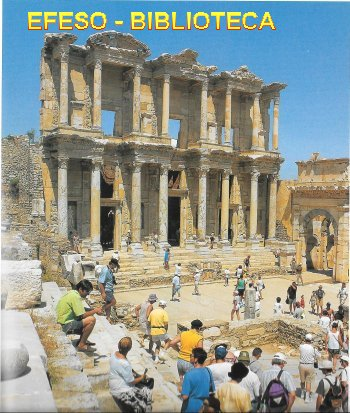
Escreveu ao Anjo da Igreja de Éfeso: “Conheço tua conduta, tua fadiga e tua perseverança; sei que não podes suportar os malvados: puseste à prova os que se diziam apóstolos (provavelmente os nicolaítas), e não o são, e os descobriste mentirosos. És perseverante, pois sofreste por causa do meu Nome (alusão a uma perseguição passada), mas não esmoreceste. Devo reprovar-te, contudo, por teres abandonado teu primeiro amor. Recorda-te, pois, de onde caíste, converte-te e retoma a conduta de outrora, do contrário, virei a ti e, caso não te convertas, removerei teu candelabro de sua posição. (Éfeso poderá perder sua posição de metrópole religiosa). Tens de bom contudo, o detestares a conduta dos nicolaítas, que também EU detesto". (Éfeso era uma cidade muito importante, para lá confluíam as variadas correntes de pensamentos e religiões da época. Acontecia que muitos deturpavam o Evangelho com suas teorias e argumentos. Mas os chefes cristãos iluminados pelo ESPÍRITO SANTO souberam distinguir o erro e a mentira, buscando corrigi-los sem demora)."Quem tem ouvidos, ouça o que o ESPÍRITO diz às Igrejas: ao vencedor, conceder-lhe-ei comer da Árvore da Vida que está no Paraíso de Meu DEUS".
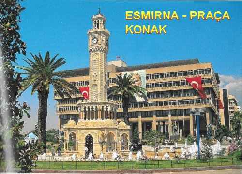
Ao Anjo da Igreja de Esmirna :“Conheço tua tribulação, tua indigência, és rico, porém! Existem as blasfêmias de alguns dos que se afirmam judeus, mas não o são – pelo contrário, eles são uma sinagoga de satanás! – Não tenhas medo do que irás sofrer. Eis que o diabo vai lançar alguns dentre vós na prisão, para serem postos à prova. Tereis uma tribulação de dez dias. Mostra-te fiel até a morte, e EU te darei a Coroa da Vida”. (Esmirna era um dos excelentes portos de mar do mundo antigo. João refere-se às calúnias dos judeus que procuravam tornar mais tensas as relações entre os cristãos, o povo e as autoridades locais).
À Igreja de Pérgamo: “Sei onde moras: é onde está o trono de satanás. Tu,
porém, seguras firmemente o Meu Nome, pois não renegou a Minha fé, nem mesmo nos
dias de Antípas, Minha testemunha fiel, que foi morto junto a vós, onde satanás
habita. (Com a permanente realização do Culto
aos Imperadores Romanos). Tenho,
contudo, algumas reprovações a 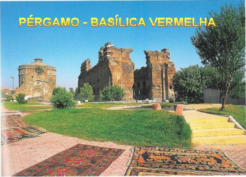
Para a Igreja de Tiatira, JESUS
acrescentou:"Conheço
tua conduta: o amor, a fé, a dedicação, a 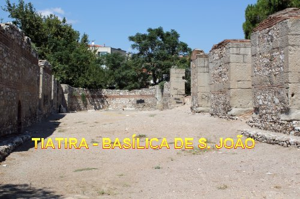
Ele escreveu
ao Anjo da Igreja de Sardes: “Assim
diz AQUELE que tem os “Sete 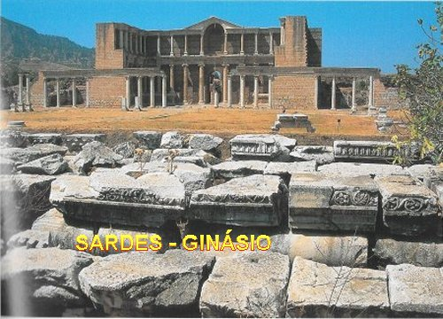
A Igreja de Filadélfia, o SENHOR
também disse:
“Conheço tua conduta: eis que pus à tua frente uma porta 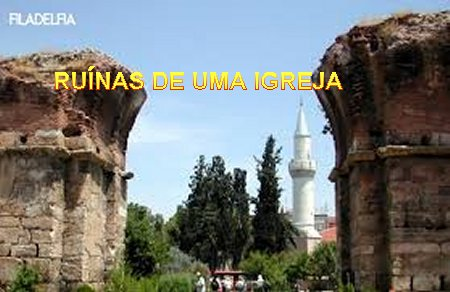
Ao Anjo da Igreja de Laodicéia
: “Conheço tua
conduta: não és frio e nem quente. Oxalá fosse frio ou 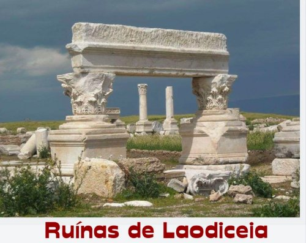
Cada missiva é concluída dizendo: “Quem tem ouvidos, ouça o que o ESPÍRITO diz às Igrejas”. (Fim do 2º e 3º Capítulos)
AS VISÕES PROFÉTICAS
PRELÚDIOS DO “GRANDE DIA DE DEUS"
Sentado em seu trono, DEUS é glorificado por sua corte celeste. Depois o horizonte se estende ao universo, e João irá nos mostrar como o Plano Divino se realizará no futuro, vencendo todas as oposições. Entretanto não podemos esperar encontrar no Apocalipse o anuncio preciso dos acontecimentos da Parusia, vamos encontrar sim, uma mensagem de esperança onde podemos visualizar a bondade misericordiosa do SENHOR DEUS em todas as ocorrências, conduzindo a humanidade à vitória final. O destino dos habitantes da Terra são entregues ao Cordeiro Redentor, NOSSO SENHOR JESUS CRISTO, sob a forma de “um Livro Selado”.
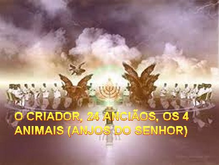
O LIVRO
“Depois, vi na mão direita Daquele que estava sentado no trono (DEUS), um livro escrito por dentro e por fora, e selado com sete selos. (O livro contém os decretos Divinos concernentes aos acontecimentos dos Últimos Tempos). Vi então um Anjo poderoso proclamando em alta voz:“Quem é digno de abrir o livro, rompendo seus selos?” Mas ninguém no Céu, nem na Terra ou sob a Terra (no Hades), era capaz de abrir ou de ler o livro. Eu chorava muito, porque ninguém foi considerado digno de abrir ou de ler o livro. Um dos Anciãos me consolou dizendo”: “Não chores! Eis que o Leão da Tribo de Judá, o Rebento de Davi venceu (Satanás e o mundo) para poder abrir o livro e seus sete selos”. Com efeito, entre o trono (de DEUS) com os Quatro Animais ao redor (ou seja, os Quatro Anjos do SENHOR) e os Anciãos, vi um Cordeiro de pé, como que imolado (foi imolado para a salvação do povo eleito). Tinha Sete Chifres (Temos que interpretar corretamente. Não significa dizer que o Cordeiro se apresente daquela maneira simbólica com chifres, mas sim que possua todas aquelas qualidades em plenitude que eles representam. Assim os chifres = símbolo de poder) e Sete Olhos (olhos = símbolo de conhecimento e de sabedoria, que CRISTO possui em Plenitude; a plenitude = é também um símbolo, representado pelo número 7) que são os Sete Espíritos de DEUS enviados por toda a Terra. ELE (o Cordeiro) veio receber o livro da mão direita Daquele (de DEUS) que está sentado no trono. “Ao receber o livro, os Quatro Animais (os Quatro Anjos do SENHOR) e os Vinte e Quatro Anciãos se prostraram diante do Cordeiro, cada um com uma harpa e taças de ouro cheias de incenso, que são as orações dos Santos, cantando um canto novo”:
“Digno és TU de receber o livro e de abrir os seus selos,
pois foste imolado e, por TEU Sangue resgataste para DEUS
homens de toda tribo, língua, povo e nação.
Fizeste de nós, para nosso DEUS, um Reino de Sacerdotes,
e nós reinaremos sobre a Terra”.
“Em minha visão ouvi ainda o clamor de uma multidão de Anjos que circundavam o trono, os Animais (os Quatro Anjos do SENHOR) e os Anciãos – seu número era de milhões de milhões e milhares de milhares de Anjos (significa dizer que era uma grande quantidade de Anjos) -, proclamando em alta voz”:
“Digno é o Cordeiro imolado de receber o poder, a riqueza (Espiritual- Divindade), a sabedoria, a força, a honra, a glória e o louvor.”
“E ouvi todas as criaturas no Céu, na Terra, sob a Terra (no Hades) no Mar, e todos os Seres que neles vivem proclamarem”:
“Àquele que está sentado no trono (DEUS) e ao Cordeiro (JESUS)
pertencem o louvor, a honra, a glória e o domínio pelos séculos dos séculos!”
“Os Quatro Animais (os Quatro Anjos do SENHOR) diziam:“Amém!” e os Anciãos se prostraram e adoraram” (o PAI e o FILHO). (Final do 5º Capítulo)
O CORDEIRO ABRE OS SETE SELOS
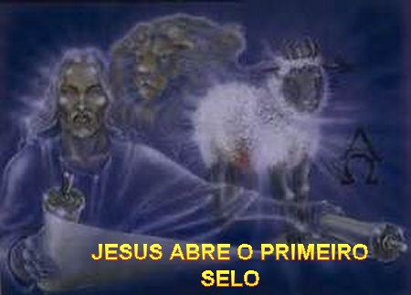
“Quando abriu o “Segundo selo” ouvi o segundo Animal (Anjo do SENHOR) dizer: “Vem!” Apareceu então, um “Cavalo Vermelho”, e ao seu montador foi concedido o poder de tirar a paz da Terra, para que os homens se matassem entre si. Entregaram-lhe também uma grande espada”. (Símbolo das guerras sangrentas provocadas pelo primeiro cavaleiro, porque o vermelho e a espada indicam a guerra. A força sem a justiça é destruída pela própria maldade, a justiça Divina nem precisa mandar castigos).
“Quando abriu o “Terceiro selo” ouvi o terceiro Animal (Anjo do SENHOR) dizer: “Vem!” Eis que apareceu um “Cavalo Negro” , cujo montador tinha na mão uma balança”. (Símbolo da Fome - fornecimento racionado e preços exorbitantes) "Ouvi então como uma voz, vindo do meio dos Quatro Animais, que dizia": "Um litro de trigo por um denário e três litros de cevada por um denário! Quanto ao óleo e ao vinho, não causes prejuízo." (Que eram preços exorbitantes. Isto nos recorda que basta uma carestia para deixar clara a fragilidade humana. A fome rebaixa verdadeiramente o orgulho humano)
“Quando abriu o
“Quarto Selo” ouvi a voz do quarto Animal (Anjo do SENHOR)
que dizia: “Vem!” Vi 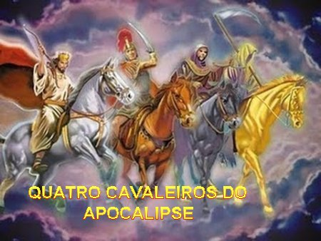
“Quando abriu o “Quinto Selo”, vi sob o altar as vidas dos que tinham sido mortos por causa da Palavra de DEUS e do testemunho que dela tinham prestado (O Altar nesta liturgia celeste corresponde ao altar dos holocaustos. Os Mártires, testemunhas da Palavra, são associados à imolação de seu Mestre JESUS. Segundo a concepção bíblica e oriental, a “vida" reside no sangue. Aqui as vidas dos Mártires estão como que “escorrendo” para a base do altar celeste onde se consuma o seu sacrifício cruento). E eles clamaram em alta voz”:
“Até quando, ó SENHOR Santo e Verdadeiro, tardarás para fazer justiça, vingando nosso sangue contra os habitantes da Terra?” (Os cristãos do primeiro século viviam sempre ameaçados por causa da sua fé. Estavam acostumados a ver seus irmãos morrer nas mãos dos carrascos, sendo torturados e presos).
“A cada um deles foi dada, então, uma “Veste Branca” (símbolo da alegria triunfante), e lhes foi dito, também, que repousassem por mais um pouco de tempo, até que se completasse o número dos seus companheiros e irmãos, que iriam ser mortos como eles”. (A derrota é apenas aparente, pois na verdade eles são os vencedores. A mensagem de João é clara: devemos sempre ter confiança porque estamos nas mãos de DEUS, e nos espera a recompensa eterna.)
“Vi quando ELE abriu o “Sexto Selo”: houve um grande terremoto ; o sol tornou-se negro como um saco de crina e a lua inteira como sangue; as estrelas do Céu se precipitaram sobre a Terra, como a figueira que deixa cair seus frutos ainda verdes ao ser agitada por um forte vento; o Céu afastou-se, como um livro que é enrolado; as montanhas todas e as ilhas foram removidas de seu lugar; os reis da Terra, os magnatas, os capitães, os ricos e os poderosos, todos, escravos e homens livres, esconderam-se nas cavernas e pelos rochedos das montanhas, dizendo aos montes e às pedras: Desmoronai sobre nós e nos escondei da Face DAQUELE que está sentado no trono, e da ira do Cordeiro, pois chegou o “Grande Dia” da ira DELES, e quem poderá ficar de pé?” (A Justiça Divina que se abate sobre os maus leva-os a esse grito de lamento e desespero. Todos estes sinais cósmicos acompanham, nos escritos proféticos, o "Dia de JAVÉ". Simbolizam o desencadeamento da "Ira de DEUS". Esta realidade dá início a "Grande Tribulação", que acontecerá durante sete anos, em duas etapas de três anos e meio. No final dos primeiros três anos e meio de Tribulação, surgirá o Anticristo.) (Final do 6º Capítulo)
OS QUE SERVEM A DEUS SERÃO PRESERVADOS
“Depois disso vi outros quatro Anjos, postados nos “Quatro Cantos da Terra”, segurando os quatro ventos da Terra, para que o vento não soprasse sobre a Terra, sobre o Mar, ou por alguma árvore. Vi também outro Anjo que subia do Oriente com o “Selo do DEUS Vivo.” Este gritou em alta voz aos quatro Anjos que haviam sido encarregados de fazer mal a Terra e ao Mar: “Não danifiqueis a Terra, o Mar e as árvores, até que tenhamos marcado a fronte dos servos do nosso DEUS.” Ouvi então o número dos que tinham sido marcados: cento e quarenta e quatro mil (Que é o quadrado de 12; 12 é o número sagrado, multiplicado por mil = 12x12= 144 x 1.000 , que é a multidão dos fiéis de CRISTO, povo de DEUS, o novo Israel. Marcados com o selo Divino eles escaparão das pragas). As 144.000 pessoas correspondem a todas as tribos dos filhos de Israel: da tribo de Judá; da tribo de Ruben; da tribo de Gad; da tribo de Aser; da tribo de Neftali; da tribo de Manasses; da tribo de Simeão; da tribo de Levi; da tribo de Issacar; da tribo de Zabulon; da tribo de José; da tribo de Benjamin. Foram marcados 12.000 de cada tribo”. (Este número citado por João, assim como a relação das tribos, não deve ser entendido como sendo uma quantidade exata, mas quer significar realmente que serão muitos, uma multidão incontável, como ele mesmo afirma a seguir no versículo 9 do Capitulo 7, e que abrangerão todos os países, em todas as partes do mundo onde a fé e o amor a DEUS, for cultivado com fervor, dignidade e confiança).
O TRIUNFO DOS ELEITOS NO CÉU
“Depois disto
eis que vi uma “grande multidão, que ninguém podia contar”, de todas as nações,
tribos, 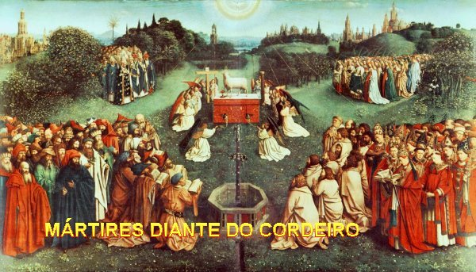
“E todos os Anjos que estavam ao redor do trono, dos Anciãos e dos quatro Animais (Quatro Anjos do SENHOR), se prostraram diante do trono para adorar a DEUS. E diziam”: “Amém! O louvor, a glória, a sabedoria, a ação de graças, a honra, o poder e a força pertencem ao nosso DEUS pelos séculos dos séculos. Amém!”
“Um dos Anciãos tomou a palavra e me disse: “Estes que estão trajados com vestes brancas, quem são e de onde vieram?” Eu lhe respondi: “Meu Senhor, és tu quem o sabes!” Ele, então, me explicou: “Estes são os que vêm da grande tribulação (As perseguições, das quais a de Nero Imperador Romano era o protótipo): lavaram as suas vestes e as alvejaram no Sangue do Cordeiro.” (O Sangue simbolizava a eficácia da Morte de JESUS, que purificou todos os cristãos com Seu Divino Sangue). E continuou a explicação”:
“É por isso que estão diante do trono de DEUS, servindo-O dia e noite em seu templo. AQUELE que está sentado no trono (DEUS) estenderá sua tenda sobre eles: Nunca mais terão fome, nem sede, o sol nunca mais os afligirá, nem qualquer calor ardente; pois o Cordeiro que está no meio do trono os apascentará, conduzindo-os até as fontes de água da vida. E DEUS enxugará toda lágrima de seus olhos”. (Estas imagens expressam a verdadeira felicidade escatológica). (Final do 7º Capítulo)